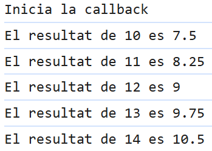

Index
Temporitzadors
Timeout
: Executa una funcio 1 sol cop despres del temps especificat.
Interval
: Executa REPETIDAMENT una funcio despres del temps especificat.
En
clearTimeout()
i el
clearInterval()
permeten posar fi als temporitzadors, pero per pararlos es te que
haver ficat el temporitzador en una variable


Callbacks
Les Callbacks son funcions que es passen com a arguments a altres funcions i s'executen al fer una accio
| # | Codi | Resultat | Descripcio |
|---|---|---|---|
| 1 | En aquest cas a la funcio usuari li passem la funcio saludar | ||
| 2 | Aqui fem callbacks anidades | ||
| 3 |  | El problema de fer aixo es que produeix callbacks infernals que es quan n'hi ha moltes, per arreglar aixo hi ha les promises |
Promises
Les Promises es un objecte que retorna el resultat de una operacio asincrona, retorna resolve si va tot correctament, si falla retorna rejected
Async-Awayt
Els Async-Awayt es divideixen funcions declarades i funcions expressades, a diferencia dels promises que va encadenant then, fica l'await i espera el resultat, aixi no fica tant codi i es mes facil de manegar error ja que es fa amb un trycatch.
| Tipus | Promesa | Execucio | Resultat |
|---|---|---|---|
| Declarada | Es fa com uns funcio normal | ||
| Expressada | Es fa com un arrowFunction en la que la variable es la mateixa funcio |
Ajax
Utilitza l'objecte XMLHttpRequest per a comunicar-se asincronament amb els servidors. Pot enviar i rebre informacio amb JSON, XML, HTML i text. Permet intercanviar dades amb el servidor sense recarregar la pagina. Inclus pot fer servir llibreries externes com:
- JQuery.ajax()
- Axios
- HTML i CSS, per crear una presentacio basada en estandards
- DOM, per la interaccio i manipulacio dinamica de la presentacio
- HTML, XML i JSON, per a l'intercanvi i manipulacio de l'informacio
- XMLHttpRequest o Fetch, per a l'intercanvi assincron de l'informacio
- JAVASCRIPT per unir la resta de tecnologies programaticament
Per fer peticions asincrones http es pot fer amb
XMLHttpRequest, aunque ajax fa servir coses mes modernes com
fetch o axios XMLHttpRequest es la base de les peticions en ajax.
Per fer-ho servir es tenen que segur els seguents passos:
-
Crear objecte XMLHttpRequest fent:
const xhr = new XMLHttpRequest(); -
Quan l'hem creat diem que quan canvii l'estat ens executi la funcio:
xhr.addEventListener("readystatechange", (e) => {}); -
Quan canvia l'estat i son els numeros entre 200 i 300 es quan esta
en l'estat correcte i llavors amb DOM fem que ens agafin les dades.
if (xhr.status >= 200 && xhr.status < 300) {} -
Ara que ja hem configurat l'enviament li diem que sera un get a una
url amb
xhr.open("GET", "assets/users.json"); -
Quan ja esta TOT preparat ho enviem amb
xhr.send();